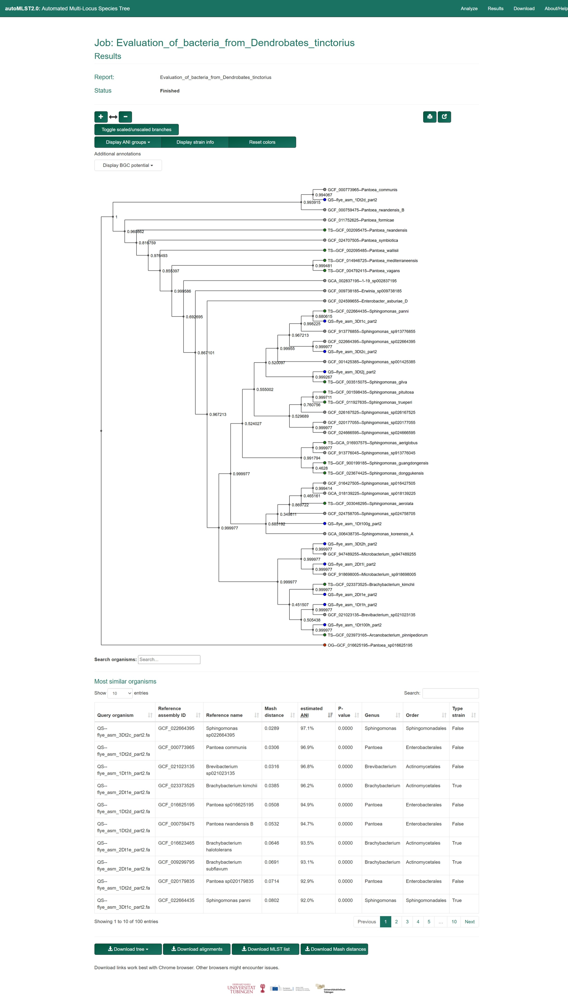

Introduction
I plan to set up a SQL database so that I have a single place to store all of the data. In order to prevent the proliferation of metadata files that I had during my project last year. I spent today doing some introductory setup and learning. Such as doing a W3 course on PostgreSQL. I also set up some folder structure for the Repo and started using this notebooking system called “blog”. (This was Fiday the 16th)
This week, I want to:
Read a scientific paper that Aaron emailed me about (the link)1
I may not have time to do much else as I am revising for an exam
Next week, I want to:
1. download some metadata files off of the NCBI to store in the SQL Database, just as a practice run with SQL and a jumping off point for the rest of the project.
Methods
On Sunday 18th of May 2025, I decided to run the 10 Bangor samples through autoMLST2 on the web interface2. In the paper, there was this link, which takes you to the home page for the tool. Then, one can click the “Start Analysis” button3. Taking one to here. It was on this page that I uploaded the 10 Bangor fasta flye-asm outputs (just by clicking the browse button and then drag-dropping them in). The domain selected was obviously Bacteria. They also allow one to add a job name and email address for usability, i like this. I waited some minutes for it to run4.
Results
After it had run, I was met with the page seen in Figure 1 :

In Figure 1, one can see; what I believe to be a de_novo phylogenetic tree for all the samples. Though it is not monophyletic because I know from first hand experience how large those things get, so it just shows the public samples around the Bangor ones, then smushes several trees together. It has a modifiable colour field for the tips, which can mean different things based on the above parameters, one such example is ANI information. Below this can be seen a subset of a table containing information on the closest public matches to our samples.
Finally, at the bottom of the page are 4 links for downloading various data. The first downloads the aforementioned phylogenetic tree, seen as both newick and .svg format. The second link gave to me a directory of files called “allignments”. I am not sure what these are, if I had to guess, they look like .fasta formated files, but with gaps, so if they were looking for common sequences, they would place the gaps where something appears in one genome but not the other. There are 10 of them, so 1 for each genome.
{kind=link}
The third link downloaded this file. It does not look useful, at least for what I am doing, I am unsure what to make of this. The fourth and final link did not work when I tried it. I noted the text saying that downloads work better in chrome, tried and the download still failed, mysterious. “Mash distance” is a field in the table so perhaps the full table was supposed to be in this(?). Anyway, I set the “Show [x] entries” button to 100 and “screanscraped”5 the table into Excel. It now resides here for viewing.
Conclusions
no conclusions yet, because this week was just dipping my toe into a bit of light work. Just wanted to say that I found out about the R git button, its a bit weird, a bit janky, but hilarious. It is a little git button just below the “Tools” tab at the top of the page, and one can push, pull, commit, all that Git stuff from inside R, now that is pretty damn nova.
Footnotes
I did not get around to reading the full paper because of being busy reading content around the exam I was about to do.↩︎
I am writing this retroactively, because, as i will get onto, Aaron has made this into a sub-project. Instead of just a weird thing to look into, and as such only just now entered scope↩︎
again, this is as of the website layout on 2025/05/23↩︎
again, retroactively writing so not sure exactly how long, but it cant have been longer than 20 minutes, id say more like 10↩︎
Just used my mouse, held down m1 (left-click) and dragged top left to bottom right, ctrl+c then ctrl+v into excel↩︎